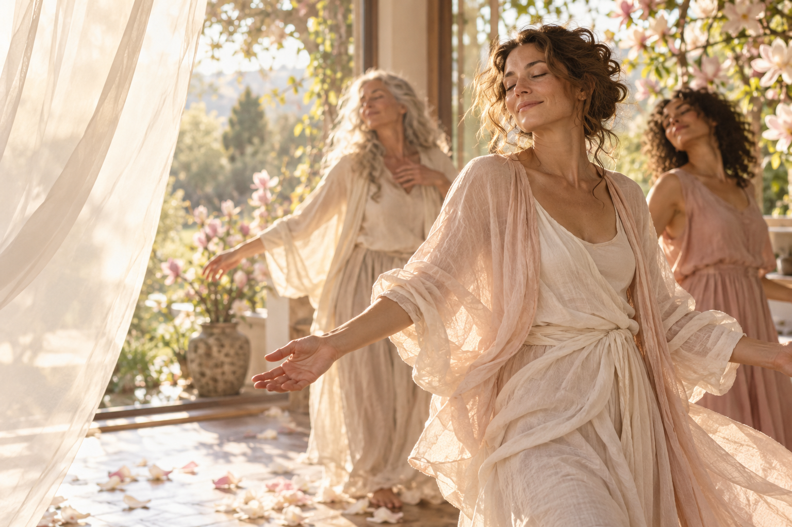

«Я всё понимаю, но ничего не меняется»
Вы много работаете над собой, но в отношениях или реализации снова узнаёте прежний сценарий. Так хочется найти свой выход и попробовать иначе.
Тренинг Центра самопознания «Жизнь»
К себе настоящей.
К жизни, в которой есть место вашим желаниям.
Два дня в тёплом, принимающем пространстве — чтобы выдохнуть, услышать себя и почувствовать, как хочется жить дальше.
Тренинг ведёт
Ольга Паркина
 Ольга ПаркинаОснователь Центра самопознания «Жизнь»
Ольга ПаркинаОснователь Центра самопознания «Жизнь»Возможно, вы давно чувствуете: хочется больше лёгкости, тепла, радости. Хочется снова слышать свои желания, свободно проявляться и чувствовать вкус к жизни. Здесь можно замедлиться и с заботой о себе прислушаться к тому, что просит вашего внимания.
Вы много работаете над собой, но в отношениях или реализации снова узнаёте прежний сценарий. Так хочется найти свой выход и попробовать иначе.
За делами и заботами на себя почти не остаётся сил. А внутри живёт желание наполниться и делать то, что радует именно вас.
Вы так долго заботились о других, что собственные желания стали едва слышны. Им тоже нужны внимание, тепло и место в вашей жизни.
Говорить открыто, делиться своими талантами, занимать своё место. И чувствовать, что для этого не нужно становиться кем-то другим.
Внутри уже есть предчувствие другой жизни. Пусть первый шаг будет посильным — с вниманием к своим страхам и опорой на себя.
Ваши желания важны. Можно учиться слышать их, просить о поддержке и находить свой ритм в отношениях с другими.
Танцевально-двигательная терапия
Расстановки и коллективные практики
Подарите себе время для того, что оживляет вас.
Записаться на тренингЗдесь можно дать себе время, внимание и заботу. Прислушаться к своим чувствам, попробовать новое и заметить то, что откликается именно вам. У каждой участницы — свой темп и свои открытия.
Возвращаться к своим настоящим желаниям, чувствам и тихим внутренним импульсам.
Учиться оставаться в контакте с собой рядом с другими: замечать своё «да» и уважать своё «нет».
Замечать свои возможности и искать путь, на котором есть место вашим талантам, желаниям и мечтам.
Открывать больше места для радости, вдохновения, движения и простого удовольствия быть собой.

Представьте: можно выдохнуть. Перестать всё время быть сильной и удобной. Почувствовать своё тело, позволить себе движение и дать место тому, что давно ждало внимания. В тепле встречи с собой и другими — прислушаться к жизни внутри.
«Новая ветка реальности» · 21–22 ноября
Два дня тренинга офлайн · метро «Достоевская»
21 ноября · танцевально-двигательная терапия
22 ноября · без собственной расстановки
22 ноября · расстановка по вашему запросу
Всего 4 места с личной расстановкой
21–22 ноября · первый день и участие в групповой работе во второй
21–22 ноября · расстановка по вашему запросу во второй день
Предоплата входит в общую стоимость участия. Она невозвратная и идёт на оплату аренды помещения.
21–22 ноября, офлайн, метро «Достоевская». Точное время и адрес сообщаются участникам при записи.
Всего 4 места с личной расстановкой. Возможность участия с личным запросом уточняется при записи.
Стоимость всех форматов указана выше. В форме записи есть поле для вопросов об участии и вашем запросе. Ольга ответит лично.
С теплом ждём каждого на этой встрече — чтобы вместе замедлиться, услышать себя и открыться новому. Оставьте заявку или напишите Ольге в удобном мессенджере — вместе обсудим ваше участие.
Если хочется сначала познакомиться и задать вопросы, Ольга ответит вам в личной переписке.